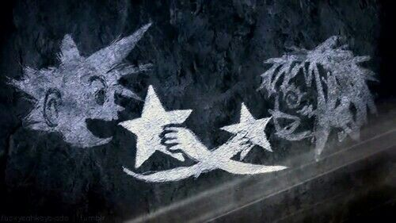
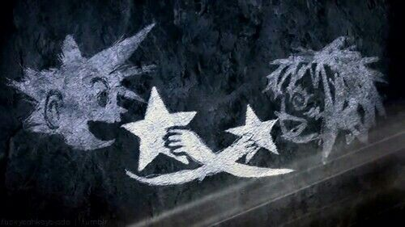

ABOUT

KINGDOM HEARTS HD 1.5 + 2.5 ReMIX is an HD remastered collection of 6 unforgettable KINGDOM HEARTS experiences. KINGDOM HEARTS HD 1.5 + 2.5 ReMIX follows the story of Sora and his friends in Kingdom hearts 1 and 2. In addition the collection introduces a set of new protagonist in Kingdom hearts Birth by Sleep: Final Mix
CHARACTERS
Sora
Sora is the main protagonist and main playable character in most of the Kingdom Hearts series. He is a Keyblade wielder from the Destiny Islands where he, along with his childhood friends Riku and Kairi, dreamed of venturing away to find out what lies beyond their home.
Donald Duck
In Kingdom Hearts, Donald is the Royal Magician of Disney Castle and the royal assistant for King Mickey. He accompanies the main protagonist Sora in his travels to find the missgin king whilst Sora is looking for his friends.
Goofy
Goofy appears alongside Donald and Sora in all of the Kingdom Hearts series. Goofy is Captain of the Royal Knights of King Mickey's court. He and Disney Castle's Court Magician Donald went out to search for the King, and ends up teaming with Sora for the rest of their journey.
Roxas
Roxas, the Key of Destinyis the Nobody of Sora, and Rank XIII of Organization XIII. Like Naminé, he was born when Sora released his own heart in order to restore Kairi's. Although Sora's heart was soon restored, Roxas continued to endure and exist, oblivious to Sora's existence for most of his life. He has the ability to use the Keyblade
Birth by Sleep Final mix
Aqua
Aqua is one of the main protagonists in Kingdom Hearts Birth by Sleep. She is one of the Keyblade Wielders before Sora. Like Terra and Ventus, it's her dream to become a Keyblade Master. She is the only one out of the three to achieve that goal and earn the title of 'Keyblade Master'.
Terra
Terra is one of the main protagonists in Kingdom Hearts Birth by Sleep. Terra, along with his best friend Aqua, were apprentices under the supervision and training of Master Eraqus at the Land of Departure. It was here that he first met Ventus and Master Xehanort.
Ventus
Ventus, also known as Ven, is one of the main protagonists in Kingdom Hearts Birth by Sleep. He wielded a Keyblade before Sora, and became an apprentice to both Master Xehanort and Master Eraqus. His best friends are Terra and Aqua, of which he is the youngest.
ART
 
